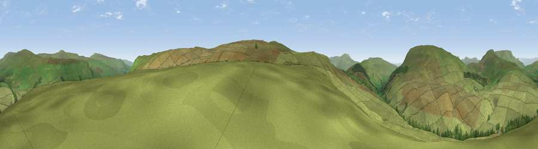

Viewpoint near Garsdale
#15716 in England · top 43% of its area beats it · near GarsdaleThe view, rendered

A 360° render of this exact spot computed from the terrain model, tree cover and land cover — summer colours, afternoon light, calibrated against photographs of famous viewpoints. Real trees, hedges and buildings will differ in detail.
The panorama
Grey silhouette: terrain skyline in each direction (720 bearings, Earth curvature and refraction included). Dashed green: skyline with trees (+15 m) and buildings (+8 m) as obstacles. Blue strip: how far the ground is visible on each bearing.
Where the view opens
Wedge length = distance to the farthest visible ground on that bearing (vegetation-aware). Rings at 10, 25 and 50 km.
What fills the view
96% grassland · 4% woodland
Angular shares of the visible panorama (visual magnitude), not map area. Landscape diversity 0.07 (0–1 Shannon).
Key numbers
More beautiful places nearby
The staircase of upgrades: each row has a higher view potential than everything closer. Driving times are estimates from straight-line distance, calibrated against real road routing — check an actual route before setting out.
| Place | Direction | Drive | Score |
|---|---|---|---|
| Viewpoint near Appersett | SE · 3 km | ~7 min | 67.2 |
| Viewpoint near Garsdale | SSE · 3 km | ~7 min | 69.4 |
| Viewpoint c9758_7607 | SSE · 3 km | ~8 min | 69.5 |
| Great Knoutberry Hill | S · 4 km | ~8 min | 74.2 |
| Wild Boar Fell | NNW · 9 km | ~17 min | 75.0 |
| Viewpoint c9983_7527 | NNW · 9 km | ~17 min | 76.3 |
| Whernside | SSW · 10 km | ~20 min | 79.9 |
| Warton Crag | WSW · 35 km | ~53 min | 83.2 |
54.31214, -2.32313 · source: screening · position refined by local search. Computed location — check access rights before visiting.